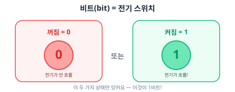
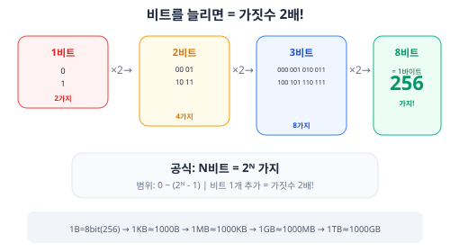
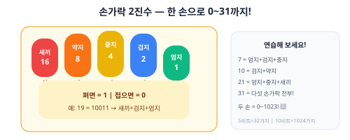

0과 1의 세계 (비트)
📚 이번에 배울 것
- 비트(bit)가 무엇인지 설명할 수 있어요.
- N비트로 표현할 수 있는 가짓수를 계산할 수 있어요.
- 바이트(byte)의 뜻과 크기를 알 수 있어요.
- 데이터 단위(KB, MB, GB)를 환산할 수 있어요.
- [심화] 워드 크기의 역사를 이해해요.
- [심화 내용] 섀넌 엔트로피와 정보 이론의 기초를 알아요.
✅ 시작 전 체크
- U0-02 '컴퓨터는 어떻게 생겼을까?'를 읽었다
- 2의 곱셈을 할 수 있다 (2x2=4, 2x2x2=8)
컴퓨터는 0과 1밖에 모른다

컴퓨터는 전기로 작동해요. 전기가 흐르면 1(켜짐), 안 흐르면 0(꺼짐)이에요. 이게 전부예요. 컴퓨터가 아는 건 0과 1뿐이에요.
그런데 어떻게 0과 1만으로 숫자도, 글자도, 사진도, 음악도, 영상도 표현할 수 있을까요? 비밀은 조합에 있어요!

왜 하필 2진수일까?
사람은 10진수(0~9)를 쓰지만, 컴퓨터는 2진수(0과 1)를 써요. 왜일까요?
만약 10단계로 나누면? '7이야 8이야?' 구분이 어려워요. 오류가 생겨요.
2단계면? '켜졌어 꺼졌어?' 확실해요. 안정적이에요!
그래서 컴퓨터는 가장 안정적인 2진법을 사용해요.
비트를 늘리면?
비트 1개로는 0, 1 두 가지밖에 표현 못해요. 비트를 늘리면 더 많은 것을 표현할 수 있어요.

| 비트 수 | 가짓수 | 2의 거듭제곱 | 범위 |
|---|---|---|---|
| 1비트 | 2 | 2¹ | 0~1 |
| 2비트 | 4 | 2² | 0~3 |
| 3비트 | 8 | 2³ | 0~7 |
| 4비트 | 16 | 2⁴ | 0~15 |
| 5비트 | 32 | 2⁵ | 0~31 |
| 8비트 | 256 | 2⁸ | 0~255 |
| 16비트 | 65,536 | 2¹⁶ | 0~65,535 |
| 32비트 | 4,294,967,296 | 2³² | 약 42억 |
| 64비트 | 약 1844경 | 2⁶⁴ | 어마어마하게 큰 수! |

• 표현 가능한 범위: 0 ~ (2N - 1)
• 가장 큰 수 = 2N - 1 (0부터 세니까 1을 빼요)
바이트(byte) = 8비트
비트가 너무 작으니까, 8비트를 묶어서 1바이트(byte)라고 불러요. 1바이트로 0부터 255까지, 총 256가지를 표현할 수 있어요.
1바이트로 256가지를 표현해요 (2⁸ = 256)
영어 알파벳 1글자를 저장하는 데 딱 1바이트면 충분해요.
왜 하필 8비트?
왜 7비트도 아니고 9비트도 아니고 딱 8비트가 1바이트일까요?
1960년대 IBM이 System/360이라는 컴퓨터를 만들면서 8비트를 1바이트로 표준화했어요.
이유: 8비트(256가지)면 영어 대소문자, 숫자, 기호를 충분히 담을 수 있고, 8은 2의 거듭제곱(2³)이라 회로 설계가 깔끔해요.
데이터 크기 단위: KB, MB, GB
바이트만으로는 큰 데이터를 표현하기 불편해요. 그래서 더 큰 단위를 만들었어요.
1메가바이트(MB) = 약 1,000KB = 약 100만 바이트
1기가바이트(GB) = 약 1,000MB = 약 10억 바이트
1테라바이트(TB) = 약 1,000GB = 약 1조 바이트
예: 사진 1장 ≈ 3MB, 노래 1곡 ≈ 5MB, 영화 1편 ≈ 2GB, 게임 1개 ≈ 50~100GB
[심화] 1000 vs 1024 논쟁
데이터 크기에서 자주 헷갈리는 부분이 있어요. 1KB가 정확히 1,000바이트일까요, 1,024바이트일까요?
하지만 하드디스크 제조사들은 1KB = 1,000바이트로 계산해서 용량을 표시했어요.
혼란을 해결하기 위해 IEC에서 새 단위를 만들었어요:
• KB(킬로바이트) = 1,000바이트 (SI 표준)
• KiB(키비바이트) = 1,024바이트 (이진 표준)
• MB = 1,000,000바이트 / MiB = 1,048,576바이트
그래서 '500GB' SSD를 사면 윈도우에서 약 465GB로 보여요!
1KB = 짧은 문자 메시지
1MB = 책 한 권 (텍스트만)
1GB = 고화질 영화 30분
1TB = 도서관 한 개 분량의 책
1PB = 넷플릭스 전체 영상 라이브러리
활동: 손가락 2진수
한 손의 손가락 5개를 이용하면 0부터 31까지 셀 수 있어요. 손가락을 펴면 1, 접으면 0이에요.

1. 숫자 7 = 엄지+검지+중지 펴기 (00111 = 1+2+4 = 7)
2. 숫자 10 = 검지+약지 펴기 (01010 = 2+8 = 10)
3. 숫자 21 = 엄지+중지+새끼 펴기 (10101 = 1+4+16 = 21)
4. 숫자 31은? 직접 해 봐요!

모든 것은 비트의 조합
비트로 숫자만 표현하는 게 아니에요. 글자, 색깔, 소리, 영상 — 전부 비트의 조합이에요.
글자: 숫자와 글자를 약속해서 대응 (A = 65 = 01000001)
색깔: RGB 각각 1바이트씩 = 3바이트로 1600만 가지 색
소리: 공기의 진동을 숫자로 변환 (샘플링)
사진: 점(픽셀)마다 색깔 정보를 저장
영상: 사진을 초당 30~60장 연속 재생
[심화] 워드(word) 크기의 역사
CPU가 한 번에 처리할 수 있는 데이터의 크기를 워드(word)라고 해요. 워드 크기는 컴퓨터의 발전과 함께 점점 커졌어요.
• 더 큰 숫자를 한 번에 처리할 수 있어요
• 더 많은 메모리에 접근할 수 있어요
32비트 CPU → 최대 4GB RAM만 인식 (2³² = 약 42억 바이트)
64비트 CPU → 이론적으로 16EB(엑사바이트)까지 인식!
그래서 RAM 4GB 이상이면 64비트 운영체제가 필요해요.
[심화] 니블(nibble) = 4비트
비트와 바이트 사이에 니블(nibble)이라는 단위도 있어요. 4비트 = 0.5바이트예요.
이건 16진수 한 자릿수와 정확히 대응해요!
1바이트(8비트) = 니블 2개 = 16진수 2자리
예: 11111111 → FF, 10100011 → A3
그래서 16진수를 쓰면 비트를 4개씩 묶어서 읽기 편해요.
━━━ 비트 전송 ━━━
[심화] 직렬 전송 vs 병렬 전송
컴퓨터 부품 사이, 또는 컴퓨터끼리 데이터를 보내는 방법은 두 가지예요.
[심화] 대역폭과 지연시간
데이터 전송에서 중요한 두 가지 개념이 있어요.
단위: bps(bits per second) = 초당 비트 수
예: 100Mbps = 1초에 1억 비트
지연시간(Latency) = 데이터가 출발해서 도착하는 데 걸리는 시간
단위: ms(밀리초), μs(마이크로초)
예: 핑(ping) 10ms = 데이터가 0.01초 만에 도착
지연시간 = 도로의 길이 (얼마나 빨리 도착)
8차선 고속도로(높은 대역폭)라도 서울→부산(높은 지연시간)이면 오래 걸려요.
1차선 골목(낮은 대역폭)이라도 집 앞(낮은 지연시간)이면 금방 도착해요.
인터넷 속도와 비트
인터넷 속도도 비트로 표현해요.
주의! 속도는 b(비트)인데, 파일 크기는 B(바이트)예요!
100Mbps ÷ 8 = 12.5MB/s
그래서 100Mbps 인터넷으로 1GB 파일을 받으면:
1,000MB ÷ 12.5MB/s = 약 80초 걸려요.
대문자 B = Byte (바이트) = 8비트
100Mbps = 초당 1억 비트
100MBps = 초당 1억 바이트 = 초당 8억 비트
8배 차이! 인터넷 광고에서 속이는 경우도 있으니 주의!
━━━ 정보 이론 ━━━
[심화 내용] 정보 이론과 섀넌 엔트로피
1948년, 미국의 수학자 클로드 섀넌(Claude Shannon)이 '정보란 무엇인가?'에 대해 수학적으로 정의했어요. 이게 정보 이론의 시작이에요.
예시:
• '내일 해가 뜬다' → 당연! 정보량 거의 0
• '내일 눈이 3미터 온다' → 깜짝! 정보량 매우 높음
수학적으로: 확률 p인 사건의 정보량 = -log₂(p) 비트
• 동전 던지기 (확률 1/2): -log₂(1/2) = 1비트
• 주사위 눈 (확률 1/6): -log₂(1/6) ≈ 2.58비트
동전 던지기: 앞/뒤 확률이 반반 → 엔트로피 = 1비트 (최대 불확실성)
양면이 앞인 동전: 항상 앞 → 엔트로피 = 0비트 (불확실성 없음)
엔트로피가 높으면: 예측이 어려움 → 정보가 많음 → 압축이 어려움
엔트로피가 낮으면: 예측이 쉬움 → 정보가 적음 → 압축이 쉬움
• 정보의 기본 단위로 비트를 제안
• 데이터 압축의 한계(엔트로피)를 수학적으로 증명
• 오류 정정 코딩의 기초를 마련
• 현대 디지털 통신의 이론적 토대를 세움
인터넷, 와이파이, 5G — 모두 섀넌의 이론 위에 세워졌어요.
[심화 내용] 데이터 압축과 엔트로피
파일을 ZIP으로 압축하면 크기가 줄어들죠? 섀넌의 엔트로피는 이론적으로 가능한 최소 크기를 알려줘요.
→ A6B4 (4글자) — 반복 패턴을 줄였어요!
QWXYZMPTNE (10글자)를 압축하면?
→ 줄일 수 없어요 — 패턴이 없으니까!
엔트로피가 낮은 데이터(반복 많음) = 잘 압축됨
엔트로피가 높은 데이터(랜덤) = 잘 안 압축됨
[심화 내용] 오류 검출과 정정
데이터를 전송할 때 전자기 간섭 등으로 비트가 바뀔 수 있어요. 0이 1로, 1이 0으로요. 이런 오류를 발견하고 고치는 방법이 있어요.
예 (짝수 패리티):
데이터 1010110 → 1의 개수 = 4개(짝수) → 패리티 비트 = 0 → 10101100
데이터 1010111 → 1의 개수 = 5개(홀수) → 패리티 비트 = 1 → 10101111
받는 쪽에서 1의 개수를 세서 짝수가 아니면 → 오류 발생! 재전송 요청
[심화] 해밍 코드
패리티 비트는 오류가 있는지 발견만 할 수 있어요. 하지만 해밍 코드(Hamming code)는 어디가 틀렸는지 찾아서 고칠 수도 있어요.
• 데이터 비트 사이에 패리티 비트를 전략적으로 배치
• 오류가 발생하면 어느 비트가 틀렸는지 찾아서 자동 수정
• 우주 탐사선, 위성 통신, ECC 메모리(서버용 RAM)에서 사용
• 예: 4비트 데이터를 보내려면 3개의 패리티 비트를 추가 → 7비트 전송
비트와 색깔
컴퓨터 화면의 색깔도 비트로 표현해요.
• R, G, B 각각 1바이트(8비트) = 0~255 단계
• 1픽셀 = 3바이트 = 24비트
• 24비트로 표현 가능한 색 = 2²⁴ = 16,777,216가지 (약 1600만 색)
예: (255, 0, 0) = 빨강, (0, 255, 0) = 초록, (0, 0, 255) = 파랑
(255, 255, 255) = 흰색, (0, 0, 0) = 검정
비트와 소리
소리도 비트로 저장해요. 소리는 공기의 진동이에요. 이 진동을 일정 간격으로 측정(샘플링)해서 숫자로 바꿔요.
• CD 음질: 44,100Hz (1초에 44,100번 측정)
• 전화: 8,000Hz
비트 깊이: 한 번 측정할 때 몇 비트로 기록하는지
• CD 음질: 16비트 (65,536단계의 세밀함)
• 고음질: 24비트 (16,777,216단계)
CD 1초 = 44,100 × 16 × 2(스테레오) = 1,411,200비트 ≈ 176KB
[심화] 부동소수점 — 비트로 소수 표현하기
정수(1, 2, 3)는 비트로 쉽게 표현할 수 있어요. 하지만 소수(3.14, 0.001)는 어떻게 표현할까요?
32비트(float)의 구조:
• 부호 1비트: 양수(0) / 음수(1)
• 지수 8비트: 소수점 위치
• 가수 23비트: 실제 숫자
과학적 표기법과 비슷해요: 3.14 = 3.14 × 10⁰
⚠ 주의: 0.1 + 0.2 = 0.30000000000000004 같은 오차가 생길 수 있어요! (나중에 C언어에서 직접 확인해요)
[심화] 엔디안 — 바이트 순서
숫자 0x12345678을 메모리에 저장할 때, 앞(12)부터 저장할까요 뒤(78)부터 저장할까요?
비트의 실생활 응용
[심화] 비트 연산 미리보기
C언어에서는 비트를 직접 조작하는 비트 연산을 할 수 있어요. 나중에 자세히 배우겠지만 미리 살짝 볼까요?
OR (|): 하나라도 1이면 1 → 1010 | 1100 = 1110
XOR (^): 서로 다르면 1 → 1010 ^ 1100 = 0110
NOT (~): 0→1, 1→0 뒤집기 → ~1010 = 0101
시프트 (<<, >>): 비트를 왼쪽/오른쪽으로 밀기
이런 연산이 게임 개발, 암호화, 네트워크에서 많이 쓰여요!
[심화 내용] 정보량과 일상
정보 이론을 일상에서 느껴볼까요?
최적 전략: '50보다 커?' → '75보다 커?' → ...
매번 가능한 답을 절반으로 줄이면 → log₂(100) ≈ 7번 만에 찾을 수 있어요!
이것이 이진 탐색의 원리이고, 정보 이론의 실체예요.
100가지 중 하나를 특정하는 데 필요한 정보량 = log₂(100) ≈ 6.64비트
디지털 vs 아날로그
비트로 세상을 표현하는 방식을 디지털(digital)이라고 해요. 반대로 연속적인 값을 그대로 사용하는 방식은 아날로그(analog)예요.
우리가 사는 세상은 아날로그이지만, 컴퓨터는 디지털이에요. 마이크가 아날로그 소리를 디지털 신호로 바꿔주고(ADC), 스피커가 디지털 신호를 아날로그 소리로 바꿔줘요(DAC).
예: 마이크가 목소리를 0과 1로 변환
DAC(Digital-to-Analog Converter): 디지털 → 아날로그 변환
예: 스피커가 0과 1을 소리로 변환
스마트폰 안에도 ADC와 DAC가 들어있어요!
C언어와 비트의 연결
char = 1바이트(8비트) = 영어 글자 1개 저장 (256가지)C언어에서
int = 4바이트(32비트) = 큰 숫자 저장 (약 42억 가지)C언어에서
long long = 8바이트(64비트) = 매우 큰 숫자 저장비트가 많을수록 더 큰 숫자, 더 많은 종류를 저장할 수 있어요.
sizeof(char) = 1 (항상 1바이트)sizeof(int) = 4 (보통 4바이트)sizeof(double) = 8 (8바이트)이건 Part 1에서 직접 확인해 볼 거예요!
━━━ 연습문제 ━━━
연습문제
비트(bit)란 무엇인가요? 한 문장으로 설명해 보세요.
1바이트는 몇 비트인가요? 1바이트로 몇 가지를 표현할 수 있나요?
다음 단위를 큰 순서대로 나열하세요: MB, KB, TB, GB, byte
인터넷 속도에서 소문자 b(비트)와 대문자 B(바이트)의 차이는 몇 배인가요?
컴퓨터가 2진수(0과 1)를 쓰는 이유를 설명해 보세요.
4비트로 표현할 수 있는 가짓수는 몇 가지인가요? 가능한 조합을 0000부터 1111까지 전부 나열해 보세요.
손가락 2진수로 숫자 19를 표현하려면 어떤 손가락을 펴야 하나요? (엄지=1, 검지=2, 중지=4, 약지=8, 새끼=16)
100Mbps 인터넷으로 500MB 파일을 다운로드하면 약 몇 초 걸리나요? (계산 과정을 적으세요)
32비트 CPU가 최대 4GB RAM만 인식할 수 있는 이유를 설명해 보세요.
직렬 전송과 병렬 전송의 차이를 일상 비유를 들어 설명해 보세요.
[심화] 10비트로 표현할 수 있는 가장 큰 수는 얼마인가요? 계산 과정을 적으세요.
[심화] 1KB = 1,000바이트와 1KB = 1,024바이트, 두 해석이 있는 이유를 설명해 보세요.
[심화] 대역폭과 지연시간의 차이를 자기 말로 설명하고, 게임할 때 어느 것이 더 중요한지 이유를 적어 보세요.
[심화 내용] 동전 던지기에서 앞면(확률 1/2)의 정보량은 몇 비트인가요? 주사위 눈(확률 1/6)의 정보량은 약 몇 비트인가요?
[심화 내용] '엔트로피가 낮은 데이터는 압축이 잘 된다'는 말의 의미를 예시를 들어 설명해 보세요.
정답
정답
용어 정리
━━━ 10축 심화 학습 ━━━
[KOI] 비트/바이트 관련 실전 기출 유형
정답: 4,096개 (0~4,095)
풀이:
• 2¹² = 4,096가지
• 0부터 세니까 가장 큰 수 = 4,096 - 1 = 4,095
• 공식: N비트 → 가짓수 = 2ᴺ, 최대값 = 2ᴺ - 1
정답: 약 240초 (4분)
풀이:
• 3GB = 3,000MB
• 100Mbps = 100백만 비트/초 = 12.5MB/초 (÷8)
• 3,000MB ÷ 12.5MB/초 = 240초
• 함정: Mbps의 b는 비트! 바이트로 바꾸려면 ÷8
정답: 패리티 비트 = 0
풀이:
• 데이터 1011010에서 1의 개수 = 4개 (짝수)
• 짝수 패리티는 1의 총 개수가 짝수여야 함
• 이미 짝수이므로 패리티 비트 = 0
• 전송: 10110100 (1의 개수 = 4, 짝수 유지)
• 만약 1비트가 바뀌면? → 1의 개수가 홀수가 되어 오류 발견!
정답: 2⁶⁴ 바이트 ≈ 16EB(엑사바이트)
풀이:
• 32비트: 2³² = 4,294,967,296 바이트 ≈ 4GB
• 64비트: 2⁶⁴ = 18,446,744,073,709,551,616 바이트 ≈ 16EB
• 16EB = 16,384PB = 16,777,216TB!
• 현재 기술로는 이만큼 RAM을 만들 수 없어요!
정답: 약 5.93MB
풀이:
• 넘셀 수 = 1920 × 1080 = 2,073,600개
• 1픽셀 = 3바이트 (R, G, B 각 1바이트)
• 총 용량 = 2,073,600 × 3 = 6,220,800바이트
• 6,220,800 ÷ 1,048,576 ≈ 5.93MB
• 실제 JPEG는 압축되어서 0.5~3MB 정도!
[KOI] 홍수 패리티를 사용하여 데이터 1100101을 전송하려고 합니다. (1) 1의 개수를 세세요 (2) 패리티 비트는 0인가요 1인가요? (3) 전송 중 5번째 비트가 0에서 1로 바뀌면 받는 쪽에서 오류를 발견할 수 있나요? 이유를 적으세요.
[디버깅] 오버플로우 — 비트가 모자라면?
비트 수가 정해져 있으면, 표현할 수 있는 범위도 정해져 있어요. 이 범위를 넘으면 오버플로우(넘침)가 생겼요!
unsigned char = 8비트 = 0~255 범위만약 255에서 1을 더하면?
11111111 + 1 = 100000000 (9비트!)하지만 8비트만 저장 가능하니까 →
00000000 = 0으로 돌아감!255 → 0 → 1 → 2 ... 다시 도는 것 처럼 보여요.
실제 사고:
• 999만 km 차량 계기판이 000000으로 리셋 (자릿수 초과)
• 2038년 문제: 32비트 유닉스 시간이 2038년 1월 19일에 오버플로우!
• 아리안5 로켓 폭발(1996년): 64비트 수를 16비트에 넣어서 오버플로우 → 로켓 폭발
| 1 | #include <stdio.h> |
| 2 | #include <limits.h> // INT_MAX, CHAR_MAX 등 |
| 3 | |
| 4 | int main(void) { |
| 5 | unsigned char c = 255; |
| 6 | printf("c = %d\n", c); // 255 |
| 7 | c = c + 1; // 오버플로우! |
| 8 | printf("c + 1 = %d\n", c); // 0! (넘침) |
| 9 | |
| 10 | int x = INT_MAX; // 32비트 최대: 2,147,483,647 |
| 11 | printf("INT_MAX = %d\n", x); |
| 12 | printf("INT_MAX + 1 = %d\n", x + 1); // 음수가 됨! |
| 13 | return 0; |
| 14 | } |
[컴퓨팅사고력] 패턴 인식 — 2의 거듭제곱
N비트 = 2ᴺ 가지라는 규칙을 발견했어요. 이처럼 규칙(패턴)을 찾는 것이 컴퓨팅사고력의 패턴 인식이에요.
• 비트 수: 1, 2, 4, 8, 16, 32, 64...
• 바이트 단위: 1B, 1KB(2¹⁰), 1MB(2²⁰), 1GB(2³⁰)...
• RGB 색상: 2²⁴ = 약 1600만 색
• 이진 탐색: N개 중 하나를 찾는 데 log₂(N)번 필요
암기할 2의 거듭제곱: 2, 4, 8, 16, 32, 64, 128, 256, 512, 1024
이 수들을 외워두면 컴퓨터 과학 공부가 훨씬 쉬워져요!
[컴퓨팅사고력] 다음 패턴을 찾으세요: (1) 1, 2, 4, 8, ?, ?, ? (다음 3개는?) (2) 8비트=256, 16비트=65536이면, 24비트=? (RGB 색상 수) (3) 1000명 중 한 명을 찾는 데 예/아니오 질문은 최소 몇 번 필요한가요? (힌트: log₂(1000) ≈ ?)
[C언어] 비트 연산 코드 미리보기
| 1 | #include <stdio.h> |
| 2 | |
| 3 | int main(void) { |
| 4 | // 왼쪽 시프트 = ×2 |
| 5 | int a = 1; |
| 6 | printf("%d\n", a); // 1 |
| 7 | printf("%d\n", a << 1); // 2 (1을 왼쪽으로 1칸 밀기) |
| 8 | printf("%d\n", a << 2); // 4 (1을 왼쪽으로 2칸 밀기) |
| 9 | printf("%d\n", a << 3); // 8 (1을 왼쪽으로 3칸 밀기) |
| 10 | printf("%d\n", a << 10); // 1024 = 1KB! |
| 11 | |
| 12 | // AND 연산으로 홈수/짝수 판단 |
| 13 | int n = 7; |
| 14 | if (n & 1) { // 마지막 비트가 1이면 홈수 |
| 15 | printf("%d는 홈수\n", n); |
| 16 | } |
| 17 | return 0; |
| 18 | } |
[C+비트] 1 << 20은 얼마인가요? 이것이 MB와 어떤 관계가 있나요? (1MB = 1,048,576바이트 = 2²⁰바이트)
[실생활] 내 데이터는 몇 비트?
• 한글 1글자 = 2~3바이트 (UTF-8), 5글자 ≈ 15바이트 = 120비트
MP3 노래 1곡 (3분):
• 320kbps × 180초 = 57,600,000비트 = 약 6.9MB
유튜브 영상 1시간 (1080p):
• 압축 후 약 3~5Mbps × 3600초 = 약 1.5~2.2GB
스마트폰 사진 1장 (12MP):
• 4000×3000 픽셀 × 3바이트 = 36MB (비압축)
• JPEG 압축 후 ≈ 약 3~5MB
[실생활] 4K 영상(3840×2160)의 1프레임이 차지하는 용량을 MB 단위로 계산하세요. (RGB 24비트 기준, 1MB = 1,048,576바이트)
[디버깅] 정수 오버플로우(255+1=0). C코드로 직접 확인. 아리안5/2038년 실제 사고
[컴퓨팅사고력] 패턴 인식 — 2의 거듭제곱 규칙 발견. 이진 탐색의 원리(log₂)
[C언어] 비트 시프트(<< = ×2), AND 연산으로 홈수/짝수 판단. 오버플로우 코드 예시
[코딩기초] char/int/long long의 비트 수와 표현 범위. sizeof 연산자
[실생활] 문자/음악/영상/사진의 비트 계산. QR코드/바코드의 비트 원리
[하드웨어] 워드 크기 발전(4→64비트). 직렬 vs 병렬 전송. 대역폭/지연시간
[타과목] 수학 — 2의 거듭제곱, 로그. 물리 — 전기 신호. 정보이론 — 셀놌 엔트로피